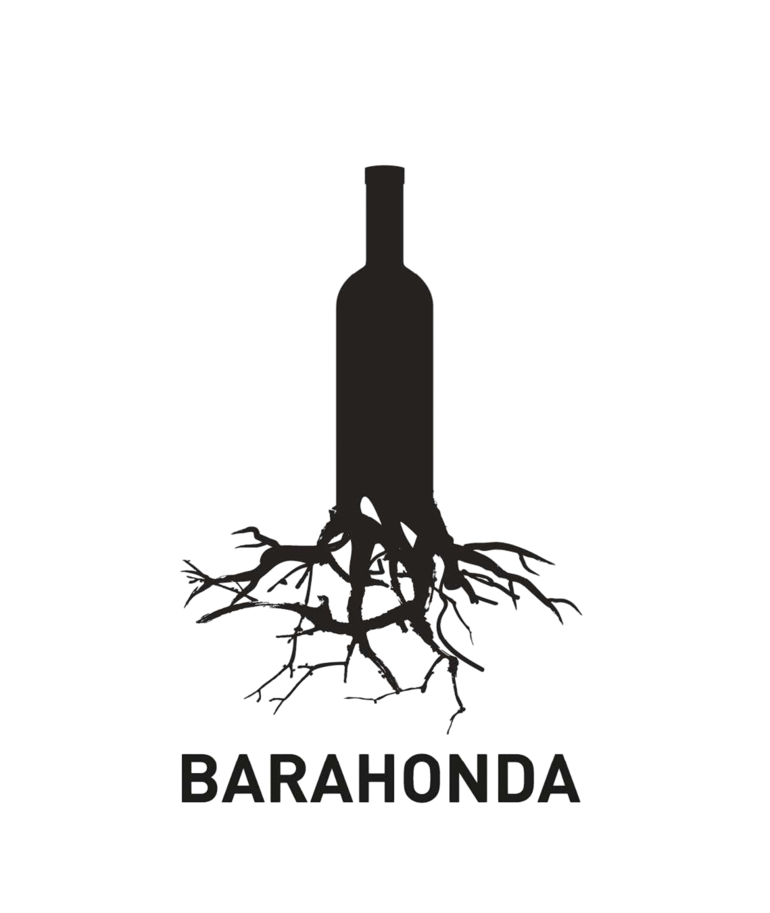
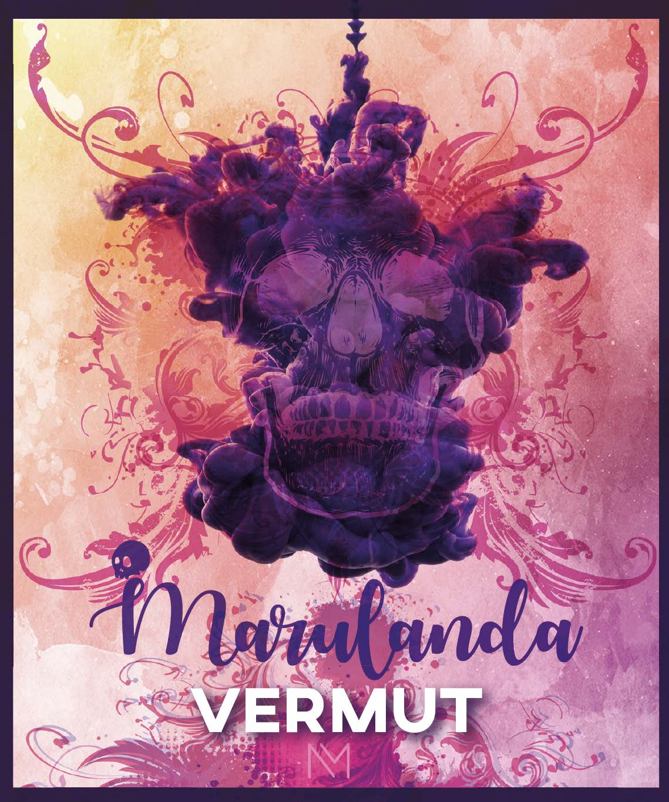

Sumérgete en la cultura del vino y el vermut de la Región de Murcia a través de una experiencia pensada para disfrutar, descubrir y aprender.
Las catas de "Murcia, desde su Sabor" ofrecen sesiones guiadas en las que conocer de cerca las variedades, matices y procesos que definen estos productos, siempre vinculados a nuestro territorio y a su identidad gastronómica.
A lo largo de las distintas sesiones, se combinarán propuestas más introductorias con otras de mayor profundidad, incluyendo catas de vino centradas en la uva Monastrell y encuentros dedicados al vermut como experiencia social y gastronómica.
Cada cita en el Centro Municipal Gastronómico incluye degustación guiada y acompañamiento gastronómico, creando un entorno cercano y participativo.

